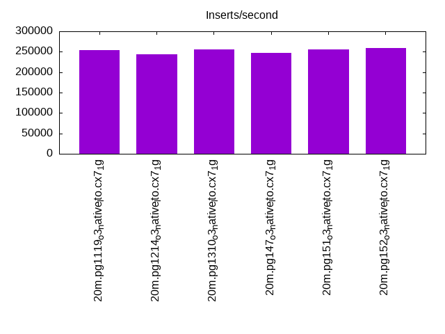
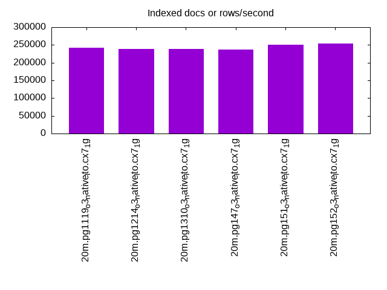
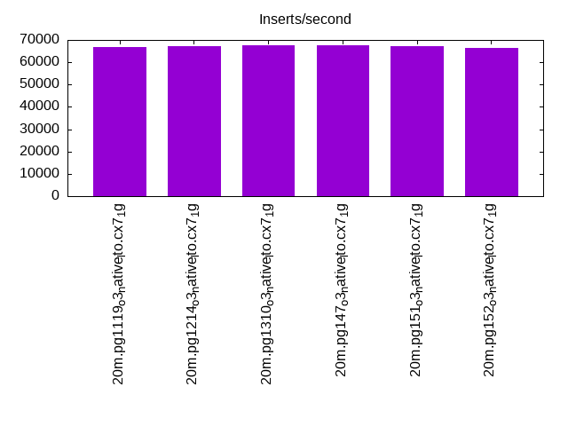
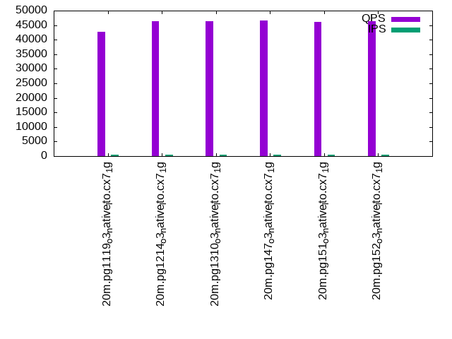
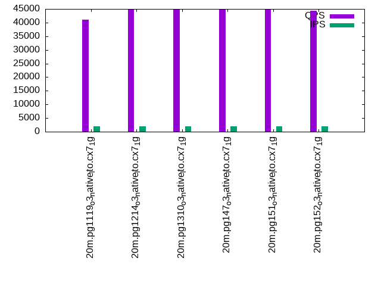
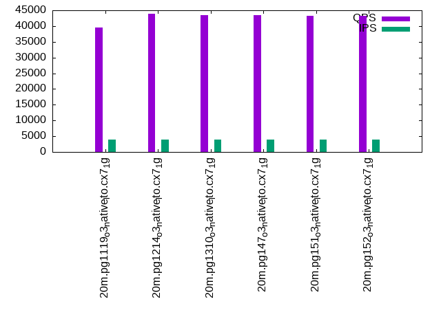

This is a report for the insert benchmark with 20M docs and 4 client(s). It is generated by scripts (bash, awk, sed) and Tufte might not be impressed. An overview of the insert benchmark is here and a short update is here. Below, by DBMS, I mean DBMS+version.config. An example is my8020.c10b40 where my means MySQL, 8020 is version 8.0.20 and c10b40 is the name for the configuration file.
The test server has 8 AMD cores, 16G RAM and an NVMe SSD. It is described here as the Beelink. The benchmark was run with 4 clients and there were 1 or 2 connections per client (1 for queries, 1 for inserts). It uses 1 table. It loads 20M rows without secondary indexes, creates secondary indexes, loads another 20M rows then does 3 read+write tests for one hour each that do queries as fast as possible with 100, 500 and then 1000 writes/second/client concurrent with the queries. The database is cached by the OS but not by the database. Clients and the DBMS share one server. The per-database configs are in the per-database subdirectories here.
The tested DBMS are:
The numbers are inserts/s for l.i0 and l.i1, indexed docs (or rows) /s for l.x and queries/s for q*.2. The values are the average rate over the entire test for inserts (IPS) and queries (QPS). The range of values for IPS and QPS is split into 3 parts: bottom 25%, middle 50%, top 25%. Values in the bottom 25% have a red background, values in the top 25% have a green background and values in the middle have no color. A gray background is used for values that can be ignored because the DBMS did not sustain the target insert rate. Red backgrounds are not used when the minimum value is within 80% of the max value.
| dbms | l.i0 | l.x | l.i1 | q100.1 | q500.1 | q1000.1 |
|---|---|---|---|---|---|---|
| 20m.pg1119_o3_native_lto.cx7_1g | 253164 | 242169 | 66890 | 42690 | 41062 | 39558 |
| 20m.pg1214_o3_native_lto.cx7_1g | 243902 | 239286 | 67114 | 46436 | 44936 | 43859 |
| 20m.pg1310_o3_native_lto.cx7_1g | 256410 | 239286 | 67568 | 46440 | 44882 | 43474 |
| 20m.pg147_o3_native_lto.cx7_1g | 246914 | 236470 | 67568 | 46516 | 44990 | 43474 |
| 20m.pg151_o3_native_lto.cx7_1g | 256410 | 251250 | 67340 | 46148 | 44768 | 43267 |
| 20m.pg152_o3_native_lto.cx7_1g | 259740 | 254430 | 66225 | 46240 | 44391 | 43172 |
This table has relative throughput, throughput for the DBMS relative to the DBMS in the first line, using the absolute throughput from the previous table.
| dbms | l.i0 | l.x | l.i1 | q100.1 | q500.1 | q1000.1 |
|---|---|---|---|---|---|---|
| 20m.pg1119_o3_native_lto.cx7_1g | 1.00 | 1.00 | 1.00 | 1.00 | 1.00 | 1.00 |
| 20m.pg1214_o3_native_lto.cx7_1g | 0.96 | 0.99 | 1.00 | 1.09 | 1.09 | 1.11 |
| 20m.pg1310_o3_native_lto.cx7_1g | 1.01 | 0.99 | 1.01 | 1.09 | 1.09 | 1.10 |
| 20m.pg147_o3_native_lto.cx7_1g | 0.98 | 0.98 | 1.01 | 1.09 | 1.10 | 1.10 |
| 20m.pg151_o3_native_lto.cx7_1g | 1.01 | 1.04 | 1.01 | 1.08 | 1.09 | 1.09 |
| 20m.pg152_o3_native_lto.cx7_1g | 1.03 | 1.05 | 0.99 | 1.08 | 1.08 | 1.09 |
This lists the average rate of inserts/s for the tests that do inserts concurrent with queries. For such tests the query rate is listed in the table above. The read+write tests are setup so that the insert rate should match the target rate every second. Cells that are not at least 95% of the target have a red background to indicate a failure to satisfy the target.
| dbms | q100.1 | q500.1 | q1000.1 |
|---|---|---|---|
| pg1119_o3_native_lto.cx7_1g | 399 | 1994 | 3989 |
| pg1214_o3_native_lto.cx7_1g | 399 | 1994 | 3989 |
| pg1310_o3_native_lto.cx7_1g | 399 | 1993 | 3989 |
| pg147_o3_native_lto.cx7_1g | 399 | 1994 | 3989 |
| pg151_o3_native_lto.cx7_1g | 399 | 1994 | 3989 |
| pg152_o3_native_lto.cx7_1g | 399 | 1994 | 3989 |
| target | 400 | 2000 | 4000 |
l.i0: load without secondary indexes. Graphs for performance per 1-second interval are here.
Average throughput:
Insert response time histogram: each cell has the percentage of responses that take <= the time in the header and max is the max response time in seconds. For the max column values in the top 25% of the range have a red background and in the bottom 25% of the range have a green background. The red background is not used when the min value is within 80% of the max value.
| dbms | 256us | 1ms | 4ms | 16ms | 64ms | 256ms | 1s | 4s | 16s | gt | max |
|---|---|---|---|---|---|---|---|---|---|---|---|
| pg1119_o3_native_lto.cx7_1g | 99.947 | 0.053 | 0.016 | ||||||||
| pg1214_o3_native_lto.cx7_1g | 99.944 | 0.056 | 0.013 | ||||||||
| pg1310_o3_native_lto.cx7_1g | 0.004 | 99.948 | 0.049 | 0.013 | |||||||
| pg147_o3_native_lto.cx7_1g | 99.941 | 0.059 | 0.010 | ||||||||
| pg151_o3_native_lto.cx7_1g | 0.006 | 99.924 | 0.070 | 0.010 | |||||||
| pg152_o3_native_lto.cx7_1g | 0.060 | 99.874 | 0.066 | 0.011 |
Performance metrics for the DBMS listed above. Some are normalized by throughput, others are not. Legend for results is here.
ips qps rps rmbps wps wmbps rpq rkbpq wpi wkbpi csps cpups cspq cpupq dbgb1 dbgb2 rss maxop p50 p99 tag 253164 0 0 0.0 410.6 126.6 0.000 0.000 0.002 0.512 27002 69.4 0.107 22 2.2 5.6 0.0 0.016 74319 48148 20m.pg1119_o3_native_lto.cx7_1g 243902 0 0 0.0 657.8 121.2 0.000 0.000 0.003 0.509 26132 69.2 0.107 23 2.1 5.6 0.0 0.013 71822 52242 20m.pg1214_o3_native_lto.cx7_1g 256410 0 0 0.0 391.9 129.3 0.000 0.000 0.002 0.517 27563 69.1 0.107 22 2.1 5.6 0.0 0.013 75218 39756 20m.pg1310_o3_native_lto.cx7_1g 246914 0 0 0.0 385.4 124.4 0.000 0.000 0.002 0.516 26612 69.0 0.108 22 2.1 5.6 0.0 0.010 73121 39457 20m.pg147_o3_native_lto.cx7_1g 256410 0 0 0.0 400.6 130.0 0.000 0.000 0.002 0.519 27580 69.7 0.108 22 2.1 5.6 0.0 0.010 75318 66728 20m.pg151_o3_native_lto.cx7_1g 259740 0 0 0.0 405.5 131.4 0.000 0.000 0.002 0.518 28203 69.8 0.109 22 2.1 5.6 0.0 0.011 75746 1898 20m.pg152_o3_native_lto.cx7_1g
l.x: create secondary indexes.
Average throughput:
Performance metrics for the DBMS listed above. Some are normalized by throughput, others are not. Legend for results is here.
ips qps rps rmbps wps wmbps rpq rkbpq wpi wkbpi csps cpups cspq cpupq dbgb1 dbgb2 rss maxop p50 p99 tag 242169 0 0 0.0 182.2 68.4 0.000 0.000 0.001 0.289 780 12.7 0.003 4 3.9 9.0 0.0 0.003 NA NA 20m.pg1119_o3_native_lto.cx7_1g 239286 0 0 0.0 356.5 62.6 0.000 0.000 0.001 0.268 752 12.6 0.003 4 3.9 9.0 0.0 0.003 NA NA 20m.pg1214_o3_native_lto.cx7_1g 239286 0 0 0.0 144.7 63.3 0.000 0.000 0.001 0.271 865 12.6 0.004 4 3.9 9.0 0.0 0.003 NA NA 20m.pg1310_o3_native_lto.cx7_1g 236470 0 0 0.0 176.5 78.1 0.000 0.000 0.001 0.338 788 12.2 0.003 4 3.9 9.0 0.0 0.003 NA NA 20m.pg147_o3_native_lto.cx7_1g 251250 0 0 0.0 148.0 63.6 0.000 0.000 0.001 0.259 785 12.7 0.003 4 3.9 9.0 0.0 0.003 NA NA 20m.pg151_o3_native_lto.cx7_1g 254430 0 0 0.0 153.3 66.2 0.000 0.000 0.001 0.266 834 12.6 0.003 4 3.9 9.0 0.0 0.003 NA NA 20m.pg152_o3_native_lto.cx7_1g
l.i1: continue load after secondary indexes created. Graphs for performance per 1-second interval are here.
Average throughput:
Insert response time histogram: each cell has the percentage of responses that take <= the time in the header and max is the max response time in seconds. For the max column values in the top 25% of the range have a red background and in the bottom 25% of the range have a green background. The red background is not used when the min value is within 80% of the max value.
| dbms | 256us | 1ms | 4ms | 16ms | 64ms | 256ms | 1s | 4s | 16s | gt | max |
|---|---|---|---|---|---|---|---|---|---|---|---|
| pg1119_o3_native_lto.cx7_1g | 98.177 | 1.748 | 0.075 | 0.058 | |||||||
| pg1214_o3_native_lto.cx7_1g | 98.094 | 1.833 | 0.072 | 0.001 | 0.081 | ||||||
| pg1310_o3_native_lto.cx7_1g | 98.105 | 1.816 | 0.080 | 0.052 | |||||||
| pg147_o3_native_lto.cx7_1g | 98.052 | 1.871 | 0.076 | nonzero | 0.073 | ||||||
| pg151_o3_native_lto.cx7_1g | 98.053 | 1.865 | 0.081 | 0.001 | 0.072 | ||||||
| pg152_o3_native_lto.cx7_1g | 97.579 | 2.345 | 0.074 | 0.001 | 0.077 |
Performance metrics for the DBMS listed above. Some are normalized by throughput, others are not. Legend for results is here.
ips qps rps rmbps wps wmbps rpq rkbpq wpi wkbpi csps cpups cspq cpupq dbgb1 dbgb2 rss maxop p50 p99 tag 66890 0 182 1.7 44065.6 841.2 0.003 0.026 0.659 12.878 40491 62.5 0.605 75 8.8 24.4 0.0 0.058 17031 6493 20m.pg1119_o3_native_lto.cx7_1g 67114 0 162 1.6 43966.6 835.0 0.002 0.024 0.655 12.740 40316 62.2 0.601 74 8.6 23.8 0.0 0.081 17230 6597 20m.pg1214_o3_native_lto.cx7_1g 67568 0 155 1.7 44679.7 855.2 0.002 0.025 0.661 12.961 40782 62.3 0.604 74 8.6 24.1 0.0 0.052 17431 7149 20m.pg1310_o3_native_lto.cx7_1g 67568 0 177 1.2 43557.8 844.7 0.003 0.019 0.645 12.802 41133 62.8 0.609 74 8.6 25.2 0.0 0.073 17281 6715 20m.pg147_o3_native_lto.cx7_1g 67340 0 183 1.3 43608.3 846.1 0.003 0.019 0.648 12.866 41067 62.8 0.610 75 8.6 25.3 0.0 0.072 17281 8145 20m.pg151_o3_native_lto.cx7_1g 66225 0 179 1.3 43675.5 835.9 0.003 0.019 0.660 12.925 42728 62.3 0.645 75 8.6 25.3 0.0 0.077 16989 6043 20m.pg152_o3_native_lto.cx7_1g
q100.1: range queries with 100 insert/s per client. Graphs for performance per 1-second interval are here.
Average throughput:
Query response time histogram: each cell has the percentage of responses that take <= the time in the header and max is the max response time in seconds. For max values in the top 25% of the range have a red background and in the bottom 25% of the range have a green background. The red background is not used when the min value is within 80% of the max value.
| dbms | 256us | 1ms | 4ms | 16ms | 64ms | 256ms | 1s | 4s | 16s | gt | max |
|---|---|---|---|---|---|---|---|---|---|---|---|
| pg1119_o3_native_lto.cx7_1g | 99.980 | 0.014 | 0.006 | nonzero | 0.009 | ||||||
| pg1214_o3_native_lto.cx7_1g | 99.983 | 0.011 | 0.006 | nonzero | 0.008 | ||||||
| pg1310_o3_native_lto.cx7_1g | 99.983 | 0.011 | 0.005 | nonzero | 0.009 | ||||||
| pg147_o3_native_lto.cx7_1g | 99.982 | 0.012 | 0.006 | nonzero | 0.010 | ||||||
| pg151_o3_native_lto.cx7_1g | 99.984 | 0.010 | 0.006 | nonzero | 0.014 | ||||||
| pg152_o3_native_lto.cx7_1g | 99.983 | 0.011 | 0.005 | nonzero | 0.009 |
Insert response time histogram: each cell has the percentage of responses that take <= the time in the header and max is the max response time in seconds. For max values in the top 25% of the range have a red background and in the bottom 25% of the range have a green background. The red background is not used when the min value is within 80% of the max value.
| dbms | 256us | 1ms | 4ms | 16ms | 64ms | 256ms | 1s | 4s | 16s | gt | max |
|---|---|---|---|---|---|---|---|---|---|---|---|
| pg1119_o3_native_lto.cx7_1g | 99.243 | 0.757 | 0.012 | ||||||||
| pg1214_o3_native_lto.cx7_1g | 99.146 | 0.854 | 0.011 | ||||||||
| pg1310_o3_native_lto.cx7_1g | 99.840 | 0.160 | 0.012 | ||||||||
| pg147_o3_native_lto.cx7_1g | 99.229 | 0.771 | 0.009 | ||||||||
| pg151_o3_native_lto.cx7_1g | 99.396 | 0.604 | 0.010 | ||||||||
| pg152_o3_native_lto.cx7_1g | 99.528 | 0.472 | 0.012 |
Performance metrics for the DBMS listed above. Some are normalized by throughput, others are not. Legend for results is here.
ips qps rps rmbps wps wmbps rpq rkbpq wpi wkbpi csps cpups cspq cpupq dbgb1 dbgb2 rss maxop p50 p99 tag 399 42690 1 0.0 1242.8 14.7 0.000 0.000 3.116 37.767 162933 50.4 3.817 94 9.0 19.2 0.0 0.009 10804 8790 20m.pg1119_o3_native_lto.cx7_1g 399 46436 0 0.0 1237.2 14.9 0.000 0.000 3.102 38.311 177175 50.6 3.815 87 8.7 18.8 0.0 0.008 11619 10644 20m.pg1214_o3_native_lto.cx7_1g 399 46440 3 0.0 1258.6 14.8 0.000 0.000 3.156 38.003 177199 50.6 3.816 87 8.8 18.8 0.0 0.009 11731 10453 20m.pg1310_o3_native_lto.cx7_1g 399 46516 2 0.0 1277.6 15.5 0.000 0.000 3.204 39.738 177417 50.6 3.814 87 8.7 22.3 0.0 0.010 11715 10389 20m.pg147_o3_native_lto.cx7_1g 399 46148 2 0.0 1259.9 15.1 0.000 0.000 3.159 38.887 175956 50.6 3.813 88 8.7 22.5 0.0 0.014 11507 10041 20m.pg151_o3_native_lto.cx7_1g 399 46240 2 0.0 1278.7 15.4 0.000 0.000 3.206 39.576 176341 50.6 3.814 88 8.8 22.4 0.0 0.009 11715 10580 20m.pg152_o3_native_lto.cx7_1g
q500.1: range queries with 500 insert/s per client. Graphs for performance per 1-second interval are here.
Average throughput:
Query response time histogram: each cell has the percentage of responses that take <= the time in the header and max is the max response time in seconds. For max values in the top 25% of the range have a red background and in the bottom 25% of the range have a green background. The red background is not used when the min value is within 80% of the max value.
| dbms | 256us | 1ms | 4ms | 16ms | 64ms | 256ms | 1s | 4s | 16s | gt | max |
|---|---|---|---|---|---|---|---|---|---|---|---|
| pg1119_o3_native_lto.cx7_1g | 99.941 | 0.039 | 0.019 | 0.002 | nonzero | 0.032 | |||||
| pg1214_o3_native_lto.cx7_1g | 99.950 | 0.031 | 0.017 | 0.001 | nonzero | 0.016 | |||||
| pg1310_o3_native_lto.cx7_1g | 99.947 | 0.033 | 0.019 | 0.001 | 0.015 | ||||||
| pg147_o3_native_lto.cx7_1g | 99.944 | 0.035 | 0.019 | 0.002 | nonzero | 0.020 | |||||
| pg151_o3_native_lto.cx7_1g | 99.944 | 0.035 | 0.019 | 0.002 | 0.015 | ||||||
| pg152_o3_native_lto.cx7_1g | 99.942 | 0.038 | 0.019 | 0.001 | 0.016 |
Insert response time histogram: each cell has the percentage of responses that take <= the time in the header and max is the max response time in seconds. For max values in the top 25% of the range have a red background and in the bottom 25% of the range have a green background. The red background is not used when the min value is within 80% of the max value.
| dbms | 256us | 1ms | 4ms | 16ms | 64ms | 256ms | 1s | 4s | 16s | gt | max |
|---|---|---|---|---|---|---|---|---|---|---|---|
| pg1119_o3_native_lto.cx7_1g | 92.706 | 7.194 | 0.100 | 0.029 | |||||||
| pg1214_o3_native_lto.cx7_1g | 96.742 | 3.226 | 0.032 | 0.024 | |||||||
| pg1310_o3_native_lto.cx7_1g | 95.357 | 4.603 | 0.040 | 0.025 | |||||||
| pg147_o3_native_lto.cx7_1g | 93.297 | 6.644 | 0.058 | 0.023 | |||||||
| pg151_o3_native_lto.cx7_1g | 90.378 | 9.540 | 0.082 | 0.025 | |||||||
| pg152_o3_native_lto.cx7_1g | 96.400 | 3.539 | 0.061 | 0.053 |
Performance metrics for the DBMS listed above. Some are normalized by throughput, others are not. Legend for results is here.
ips qps rps rmbps wps wmbps rpq rkbpq wpi wkbpi csps cpups cspq cpupq dbgb1 dbgb2 rss maxop p50 p99 tag 1994 41062 24 0.2 5739.0 55.0 0.001 0.005 2.878 28.249 155441 52.0 3.785 101 10.5 18.1 0.0 0.032 10392 8950 20m.pg1119_o3_native_lto.cx7_1g 1994 44936 18 0.2 5735.4 55.0 0.000 0.004 2.876 28.227 170097 52.1 3.785 93 10.2 17.7 0.0 0.016 11256 10245 20m.pg1214_o3_native_lto.cx7_1g 1993 44882 34 0.3 5766.7 55.3 0.001 0.007 2.893 28.416 170048 52.0 3.789 93 10.2 17.8 0.0 0.015 11293 10120 20m.pg1310_o3_native_lto.cx7_1g 1994 44990 32 0.3 5767.3 55.3 0.001 0.006 2.892 28.393 170295 52.0 3.785 92 10.2 20.0 0.0 0.020 11256 9497 20m.pg147_o3_native_lto.cx7_1g 1994 44768 33 0.3 5763.8 55.3 0.001 0.006 2.890 28.389 169390 52.0 3.784 93 10.2 20.1 0.0 0.015 11268 9558 20m.pg151_o3_native_lto.cx7_1g 1994 44391 34 0.3 5763.2 55.3 0.001 0.006 2.890 28.376 167977 52.0 3.784 94 10.2 20.1 0.0 0.016 11172 9542 20m.pg152_o3_native_lto.cx7_1g
q1000.1: range queries with 1000 insert/s per client. Graphs for performance per 1-second interval are here.
Average throughput:
Query response time histogram: each cell has the percentage of responses that take <= the time in the header and max is the max response time in seconds. For max values in the top 25% of the range have a red background and in the bottom 25% of the range have a green background. The red background is not used when the min value is within 80% of the max value.
| dbms | 256us | 1ms | 4ms | 16ms | 64ms | 256ms | 1s | 4s | 16s | gt | max |
|---|---|---|---|---|---|---|---|---|---|---|---|
| pg1119_o3_native_lto.cx7_1g | 99.896 | 0.076 | 0.025 | 0.002 | nonzero | 0.032 | |||||
| pg1214_o3_native_lto.cx7_1g | 99.909 | 0.064 | 0.025 | 0.002 | nonzero | 0.024 | |||||
| pg1310_o3_native_lto.cx7_1g | 99.912 | 0.063 | 0.023 | 0.002 | nonzero | 0.018 | |||||
| pg147_o3_native_lto.cx7_1g | 99.895 | 0.076 | 0.028 | 0.002 | nonzero | 0.019 | |||||
| pg151_o3_native_lto.cx7_1g | 99.899 | 0.072 | 0.027 | 0.002 | nonzero | 0.022 | |||||
| pg152_o3_native_lto.cx7_1g | 99.903 | 0.069 | 0.026 | 0.002 | nonzero | 0.022 |
Insert response time histogram: each cell has the percentage of responses that take <= the time in the header and max is the max response time in seconds. For max values in the top 25% of the range have a red background and in the bottom 25% of the range have a green background. The red background is not used when the min value is within 80% of the max value.
| dbms | 256us | 1ms | 4ms | 16ms | 64ms | 256ms | 1s | 4s | 16s | gt | max |
|---|---|---|---|---|---|---|---|---|---|---|---|
| pg1119_o3_native_lto.cx7_1g | 93.094 | 6.797 | 0.109 | 0.033 | |||||||
| pg1214_o3_native_lto.cx7_1g | 93.261 | 6.657 | 0.082 | 0.028 | |||||||
| pg1310_o3_native_lto.cx7_1g | 95.871 | 4.097 | 0.033 | 0.024 | |||||||
| pg147_o3_native_lto.cx7_1g | 93.352 | 6.581 | 0.067 | 0.027 | |||||||
| pg151_o3_native_lto.cx7_1g | 93.674 | 6.260 | 0.067 | 0.025 | |||||||
| pg152_o3_native_lto.cx7_1g | 93.860 | 6.084 | 0.056 | 0.028 |
Performance metrics for the DBMS listed above. Some are normalized by throughput, others are not. Legend for results is here.
ips qps rps rmbps wps wmbps rpq rkbpq wpi wkbpi csps cpups cspq cpupq dbgb1 dbgb2 rss maxop p50 p99 tag 3989 39558 28 0.2 11224.9 99.1 0.001 0.006 2.814 25.440 147288 53.9 3.723 109 12.6 19.2 0.0 0.032 9817 8407 20m.pg1119_o3_native_lto.cx7_1g 3989 43859 48 0.5 11340.4 100.0 0.001 0.011 2.843 25.672 163550 54.0 3.729 98 12.6 19.1 0.0 0.024 10947 9833 20m.pg1214_o3_native_lto.cx7_1g 3989 43474 54 0.5 11389.9 100.4 0.001 0.012 2.855 25.777 162105 53.9 3.729 99 12.6 19.2 0.0 0.018 10856 9813 20m.pg1310_o3_native_lto.cx7_1g 3989 43474 62 0.5 11392.9 100.4 0.001 0.013 2.856 25.783 162057 53.9 3.728 99 12.6 21.0 0.0 0.019 10852 9625 20m.pg147_o3_native_lto.cx7_1g 3989 43267 62 0.5 11387.0 100.4 0.001 0.013 2.855 25.776 161362 53.9 3.729 100 12.6 21.0 0.0 0.022 10805 9494 20m.pg151_o3_native_lto.cx7_1g 3989 43172 62 0.5 11390.0 100.4 0.001 0.013 2.855 25.777 160829 53.9 3.725 100 12.6 21.0 0.0 0.022 10772 9557 20m.pg152_o3_native_lto.cx7_1g
l.i0: load without secondary indexes
Performance metrics for all DBMS, not just the ones listed above. Some are normalized by throughput, others are not. Legend for results is here.
ips qps rps rmbps wps wmbps rpq rkbpq wpi wkbpi csps cpups cspq cpupq dbgb1 dbgb2 rss maxop p50 p99 tag 253164 0 0 0.0 410.6 126.6 0.000 0.000 0.002 0.512 27002 69.4 0.107 22 2.2 5.6 0.0 0.016 74319 48148 20m.pg1119_o3_native_lto.cx7_1g 243902 0 0 0.0 657.8 121.2 0.000 0.000 0.003 0.509 26132 69.2 0.107 23 2.1 5.6 0.0 0.013 71822 52242 20m.pg1214_o3_native_lto.cx7_1g 256410 0 0 0.0 391.9 129.3 0.000 0.000 0.002 0.517 27563 69.1 0.107 22 2.1 5.6 0.0 0.013 75218 39756 20m.pg1310_o3_native_lto.cx7_1g 246914 0 0 0.0 385.4 124.4 0.000 0.000 0.002 0.516 26612 69.0 0.108 22 2.1 5.6 0.0 0.010 73121 39457 20m.pg147_o3_native_lto.cx7_1g 256410 0 0 0.0 400.6 130.0 0.000 0.000 0.002 0.519 27580 69.7 0.108 22 2.1 5.6 0.0 0.010 75318 66728 20m.pg151_o3_native_lto.cx7_1g 259740 0 0 0.0 405.5 131.4 0.000 0.000 0.002 0.518 28203 69.8 0.109 22 2.1 5.6 0.0 0.011 75746 1898 20m.pg152_o3_native_lto.cx7_1g
l.x: create secondary indexes
Performance metrics for all DBMS, not just the ones listed above. Some are normalized by throughput, others are not. Legend for results is here.
ips qps rps rmbps wps wmbps rpq rkbpq wpi wkbpi csps cpups cspq cpupq dbgb1 dbgb2 rss maxop p50 p99 tag 242169 0 0 0.0 182.2 68.4 0.000 0.000 0.001 0.289 780 12.7 0.003 4 3.9 9.0 0.0 0.003 NA NA 20m.pg1119_o3_native_lto.cx7_1g 239286 0 0 0.0 356.5 62.6 0.000 0.000 0.001 0.268 752 12.6 0.003 4 3.9 9.0 0.0 0.003 NA NA 20m.pg1214_o3_native_lto.cx7_1g 239286 0 0 0.0 144.7 63.3 0.000 0.000 0.001 0.271 865 12.6 0.004 4 3.9 9.0 0.0 0.003 NA NA 20m.pg1310_o3_native_lto.cx7_1g 236470 0 0 0.0 176.5 78.1 0.000 0.000 0.001 0.338 788 12.2 0.003 4 3.9 9.0 0.0 0.003 NA NA 20m.pg147_o3_native_lto.cx7_1g 251250 0 0 0.0 148.0 63.6 0.000 0.000 0.001 0.259 785 12.7 0.003 4 3.9 9.0 0.0 0.003 NA NA 20m.pg151_o3_native_lto.cx7_1g 254430 0 0 0.0 153.3 66.2 0.000 0.000 0.001 0.266 834 12.6 0.003 4 3.9 9.0 0.0 0.003 NA NA 20m.pg152_o3_native_lto.cx7_1g
l.i1: continue load after secondary indexes created
Performance metrics for all DBMS, not just the ones listed above. Some are normalized by throughput, others are not. Legend for results is here.
ips qps rps rmbps wps wmbps rpq rkbpq wpi wkbpi csps cpups cspq cpupq dbgb1 dbgb2 rss maxop p50 p99 tag 66890 0 182 1.7 44065.6 841.2 0.003 0.026 0.659 12.878 40491 62.5 0.605 75 8.8 24.4 0.0 0.058 17031 6493 20m.pg1119_o3_native_lto.cx7_1g 67114 0 162 1.6 43966.6 835.0 0.002 0.024 0.655 12.740 40316 62.2 0.601 74 8.6 23.8 0.0 0.081 17230 6597 20m.pg1214_o3_native_lto.cx7_1g 67568 0 155 1.7 44679.7 855.2 0.002 0.025 0.661 12.961 40782 62.3 0.604 74 8.6 24.1 0.0 0.052 17431 7149 20m.pg1310_o3_native_lto.cx7_1g 67568 0 177 1.2 43557.8 844.7 0.003 0.019 0.645 12.802 41133 62.8 0.609 74 8.6 25.2 0.0 0.073 17281 6715 20m.pg147_o3_native_lto.cx7_1g 67340 0 183 1.3 43608.3 846.1 0.003 0.019 0.648 12.866 41067 62.8 0.610 75 8.6 25.3 0.0 0.072 17281 8145 20m.pg151_o3_native_lto.cx7_1g 66225 0 179 1.3 43675.5 835.9 0.003 0.019 0.660 12.925 42728 62.3 0.645 75 8.6 25.3 0.0 0.077 16989 6043 20m.pg152_o3_native_lto.cx7_1g
q100.1: range queries with 100 insert/s per client
Performance metrics for all DBMS, not just the ones listed above. Some are normalized by throughput, others are not. Legend for results is here.
ips qps rps rmbps wps wmbps rpq rkbpq wpi wkbpi csps cpups cspq cpupq dbgb1 dbgb2 rss maxop p50 p99 tag 399 42690 1 0.0 1242.8 14.7 0.000 0.000 3.116 37.767 162933 50.4 3.817 94 9.0 19.2 0.0 0.009 10804 8790 20m.pg1119_o3_native_lto.cx7_1g 399 46436 0 0.0 1237.2 14.9 0.000 0.000 3.102 38.311 177175 50.6 3.815 87 8.7 18.8 0.0 0.008 11619 10644 20m.pg1214_o3_native_lto.cx7_1g 399 46440 3 0.0 1258.6 14.8 0.000 0.000 3.156 38.003 177199 50.6 3.816 87 8.8 18.8 0.0 0.009 11731 10453 20m.pg1310_o3_native_lto.cx7_1g 399 46516 2 0.0 1277.6 15.5 0.000 0.000 3.204 39.738 177417 50.6 3.814 87 8.7 22.3 0.0 0.010 11715 10389 20m.pg147_o3_native_lto.cx7_1g 399 46148 2 0.0 1259.9 15.1 0.000 0.000 3.159 38.887 175956 50.6 3.813 88 8.7 22.5 0.0 0.014 11507 10041 20m.pg151_o3_native_lto.cx7_1g 399 46240 2 0.0 1278.7 15.4 0.000 0.000 3.206 39.576 176341 50.6 3.814 88 8.8 22.4 0.0 0.009 11715 10580 20m.pg152_o3_native_lto.cx7_1g
q500.1: range queries with 500 insert/s per client
Performance metrics for all DBMS, not just the ones listed above. Some are normalized by throughput, others are not. Legend for results is here.
ips qps rps rmbps wps wmbps rpq rkbpq wpi wkbpi csps cpups cspq cpupq dbgb1 dbgb2 rss maxop p50 p99 tag 1994 41062 24 0.2 5739.0 55.0 0.001 0.005 2.878 28.249 155441 52.0 3.785 101 10.5 18.1 0.0 0.032 10392 8950 20m.pg1119_o3_native_lto.cx7_1g 1994 44936 18 0.2 5735.4 55.0 0.000 0.004 2.876 28.227 170097 52.1 3.785 93 10.2 17.7 0.0 0.016 11256 10245 20m.pg1214_o3_native_lto.cx7_1g 1993 44882 34 0.3 5766.7 55.3 0.001 0.007 2.893 28.416 170048 52.0 3.789 93 10.2 17.8 0.0 0.015 11293 10120 20m.pg1310_o3_native_lto.cx7_1g 1994 44990 32 0.3 5767.3 55.3 0.001 0.006 2.892 28.393 170295 52.0 3.785 92 10.2 20.0 0.0 0.020 11256 9497 20m.pg147_o3_native_lto.cx7_1g 1994 44768 33 0.3 5763.8 55.3 0.001 0.006 2.890 28.389 169390 52.0 3.784 93 10.2 20.1 0.0 0.015 11268 9558 20m.pg151_o3_native_lto.cx7_1g 1994 44391 34 0.3 5763.2 55.3 0.001 0.006 2.890 28.376 167977 52.0 3.784 94 10.2 20.1 0.0 0.016 11172 9542 20m.pg152_o3_native_lto.cx7_1g
q1000.1: range queries with 1000 insert/s per client
Performance metrics for all DBMS, not just the ones listed above. Some are normalized by throughput, others are not. Legend for results is here.
ips qps rps rmbps wps wmbps rpq rkbpq wpi wkbpi csps cpups cspq cpupq dbgb1 dbgb2 rss maxop p50 p99 tag 3989 39558 28 0.2 11224.9 99.1 0.001 0.006 2.814 25.440 147288 53.9 3.723 109 12.6 19.2 0.0 0.032 9817 8407 20m.pg1119_o3_native_lto.cx7_1g 3989 43859 48 0.5 11340.4 100.0 0.001 0.011 2.843 25.672 163550 54.0 3.729 98 12.6 19.1 0.0 0.024 10947 9833 20m.pg1214_o3_native_lto.cx7_1g 3989 43474 54 0.5 11389.9 100.4 0.001 0.012 2.855 25.777 162105 53.9 3.729 99 12.6 19.2 0.0 0.018 10856 9813 20m.pg1310_o3_native_lto.cx7_1g 3989 43474 62 0.5 11392.9 100.4 0.001 0.013 2.856 25.783 162057 53.9 3.728 99 12.6 21.0 0.0 0.019 10852 9625 20m.pg147_o3_native_lto.cx7_1g 3989 43267 62 0.5 11387.0 100.4 0.001 0.013 2.855 25.776 161362 53.9 3.729 100 12.6 21.0 0.0 0.022 10805 9494 20m.pg151_o3_native_lto.cx7_1g 3989 43172 62 0.5 11390.0 100.4 0.001 0.013 2.855 25.777 160829 53.9 3.725 100 12.6 21.0 0.0 0.022 10772 9557 20m.pg152_o3_native_lto.cx7_1g
Insert response time histogram
256us 1ms 4ms 16ms 64ms 256ms 1s 4s 16s gt max tag 0.000 0.000 99.947 0.053 0.000 0.000 0.000 0.000 0.000 0.000 0.016 pg1119_o3_native_lto.cx7_1g 0.000 0.000 99.944 0.056 0.000 0.000 0.000 0.000 0.000 0.000 0.013 pg1214_o3_native_lto.cx7_1g 0.000 0.004 99.948 0.049 0.000 0.000 0.000 0.000 0.000 0.000 0.013 pg1310_o3_native_lto.cx7_1g 0.000 0.000 99.941 0.059 0.000 0.000 0.000 0.000 0.000 0.000 0.010 pg147_o3_native_lto.cx7_1g 0.000 0.006 99.924 0.070 0.000 0.000 0.000 0.000 0.000 0.000 0.010 pg151_o3_native_lto.cx7_1g 0.000 0.060 99.874 0.066 0.000 0.000 0.000 0.000 0.000 0.000 0.011 pg152_o3_native_lto.cx7_1g
TODO - determine whether there is data for create index response time
Insert response time histogram
256us 1ms 4ms 16ms 64ms 256ms 1s 4s 16s gt max tag 0.000 0.000 98.177 1.748 0.075 0.000 0.000 0.000 0.000 0.000 0.058 pg1119_o3_native_lto.cx7_1g 0.000 0.000 98.094 1.833 0.072 0.001 0.000 0.000 0.000 0.000 0.081 pg1214_o3_native_lto.cx7_1g 0.000 0.000 98.105 1.816 0.080 0.000 0.000 0.000 0.000 0.000 0.052 pg1310_o3_native_lto.cx7_1g 0.000 0.000 98.052 1.871 0.076 nonzero 0.000 0.000 0.000 0.000 0.073 pg147_o3_native_lto.cx7_1g 0.000 0.000 98.053 1.865 0.081 0.001 0.000 0.000 0.000 0.000 0.072 pg151_o3_native_lto.cx7_1g 0.000 0.000 97.579 2.345 0.074 0.001 0.000 0.000 0.000 0.000 0.077 pg152_o3_native_lto.cx7_1g
Query response time histogram
256us 1ms 4ms 16ms 64ms 256ms 1s 4s 16s gt max tag 99.980 0.014 0.006 nonzero 0.000 0.000 0.000 0.000 0.000 0.000 0.009 pg1119_o3_native_lto.cx7_1g 99.983 0.011 0.006 nonzero 0.000 0.000 0.000 0.000 0.000 0.000 0.008 pg1214_o3_native_lto.cx7_1g 99.983 0.011 0.005 nonzero 0.000 0.000 0.000 0.000 0.000 0.000 0.009 pg1310_o3_native_lto.cx7_1g 99.982 0.012 0.006 nonzero 0.000 0.000 0.000 0.000 0.000 0.000 0.010 pg147_o3_native_lto.cx7_1g 99.984 0.010 0.006 nonzero 0.000 0.000 0.000 0.000 0.000 0.000 0.014 pg151_o3_native_lto.cx7_1g 99.983 0.011 0.005 nonzero 0.000 0.000 0.000 0.000 0.000 0.000 0.009 pg152_o3_native_lto.cx7_1g
Insert response time histogram
256us 1ms 4ms 16ms 64ms 256ms 1s 4s 16s gt max tag 0.000 0.000 99.243 0.757 0.000 0.000 0.000 0.000 0.000 0.000 0.012 pg1119_o3_native_lto.cx7_1g 0.000 0.000 99.146 0.854 0.000 0.000 0.000 0.000 0.000 0.000 0.011 pg1214_o3_native_lto.cx7_1g 0.000 0.000 99.840 0.160 0.000 0.000 0.000 0.000 0.000 0.000 0.012 pg1310_o3_native_lto.cx7_1g 0.000 0.000 99.229 0.771 0.000 0.000 0.000 0.000 0.000 0.000 0.009 pg147_o3_native_lto.cx7_1g 0.000 0.000 99.396 0.604 0.000 0.000 0.000 0.000 0.000 0.000 0.010 pg151_o3_native_lto.cx7_1g 0.000 0.000 99.528 0.472 0.000 0.000 0.000 0.000 0.000 0.000 0.012 pg152_o3_native_lto.cx7_1g
Query response time histogram
256us 1ms 4ms 16ms 64ms 256ms 1s 4s 16s gt max tag 99.941 0.039 0.019 0.002 nonzero 0.000 0.000 0.000 0.000 0.000 0.032 pg1119_o3_native_lto.cx7_1g 99.950 0.031 0.017 0.001 nonzero 0.000 0.000 0.000 0.000 0.000 0.016 pg1214_o3_native_lto.cx7_1g 99.947 0.033 0.019 0.001 0.000 0.000 0.000 0.000 0.000 0.000 0.015 pg1310_o3_native_lto.cx7_1g 99.944 0.035 0.019 0.002 nonzero 0.000 0.000 0.000 0.000 0.000 0.020 pg147_o3_native_lto.cx7_1g 99.944 0.035 0.019 0.002 0.000 0.000 0.000 0.000 0.000 0.000 0.015 pg151_o3_native_lto.cx7_1g 99.942 0.038 0.019 0.001 0.000 0.000 0.000 0.000 0.000 0.000 0.016 pg152_o3_native_lto.cx7_1g
Insert response time histogram
256us 1ms 4ms 16ms 64ms 256ms 1s 4s 16s gt max tag 0.000 0.000 92.706 7.194 0.100 0.000 0.000 0.000 0.000 0.000 0.029 pg1119_o3_native_lto.cx7_1g 0.000 0.000 96.742 3.226 0.032 0.000 0.000 0.000 0.000 0.000 0.024 pg1214_o3_native_lto.cx7_1g 0.000 0.000 95.357 4.603 0.040 0.000 0.000 0.000 0.000 0.000 0.025 pg1310_o3_native_lto.cx7_1g 0.000 0.000 93.297 6.644 0.058 0.000 0.000 0.000 0.000 0.000 0.023 pg147_o3_native_lto.cx7_1g 0.000 0.000 90.378 9.540 0.082 0.000 0.000 0.000 0.000 0.000 0.025 pg151_o3_native_lto.cx7_1g 0.000 0.000 96.400 3.539 0.061 0.000 0.000 0.000 0.000 0.000 0.053 pg152_o3_native_lto.cx7_1g
Query response time histogram
256us 1ms 4ms 16ms 64ms 256ms 1s 4s 16s gt max tag 99.896 0.076 0.025 0.002 nonzero 0.000 0.000 0.000 0.000 0.000 0.032 pg1119_o3_native_lto.cx7_1g 99.909 0.064 0.025 0.002 nonzero 0.000 0.000 0.000 0.000 0.000 0.024 pg1214_o3_native_lto.cx7_1g 99.912 0.063 0.023 0.002 nonzero 0.000 0.000 0.000 0.000 0.000 0.018 pg1310_o3_native_lto.cx7_1g 99.895 0.076 0.028 0.002 nonzero 0.000 0.000 0.000 0.000 0.000 0.019 pg147_o3_native_lto.cx7_1g 99.899 0.072 0.027 0.002 nonzero 0.000 0.000 0.000 0.000 0.000 0.022 pg151_o3_native_lto.cx7_1g 99.903 0.069 0.026 0.002 nonzero 0.000 0.000 0.000 0.000 0.000 0.022 pg152_o3_native_lto.cx7_1g
Insert response time histogram
256us 1ms 4ms 16ms 64ms 256ms 1s 4s 16s gt max tag 0.000 0.000 93.094 6.797 0.109 0.000 0.000 0.000 0.000 0.000 0.033 pg1119_o3_native_lto.cx7_1g 0.000 0.000 93.261 6.657 0.082 0.000 0.000 0.000 0.000 0.000 0.028 pg1214_o3_native_lto.cx7_1g 0.000 0.000 95.871 4.097 0.033 0.000 0.000 0.000 0.000 0.000 0.024 pg1310_o3_native_lto.cx7_1g 0.000 0.000 93.352 6.581 0.067 0.000 0.000 0.000 0.000 0.000 0.027 pg147_o3_native_lto.cx7_1g 0.000 0.000 93.674 6.260 0.067 0.000 0.000 0.000 0.000 0.000 0.025 pg151_o3_native_lto.cx7_1g 0.000 0.000 93.860 6.084 0.056 0.000 0.000 0.000 0.000 0.000 0.028 pg152_o3_native_lto.cx7_1g